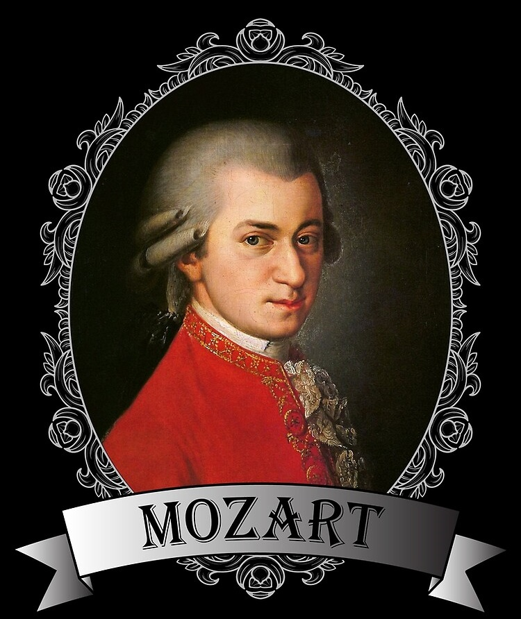
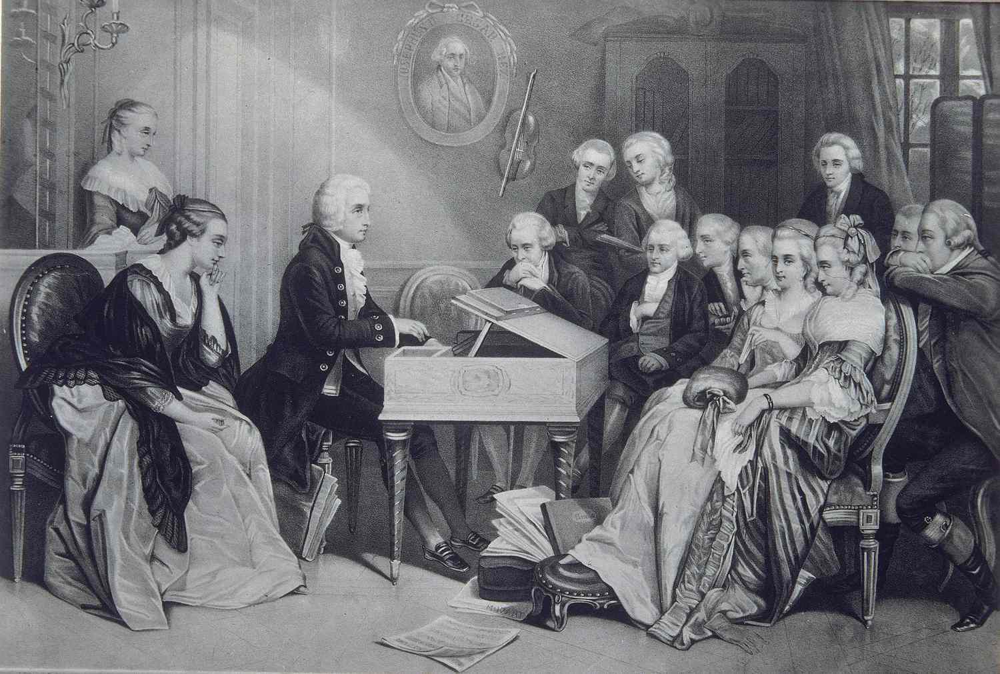
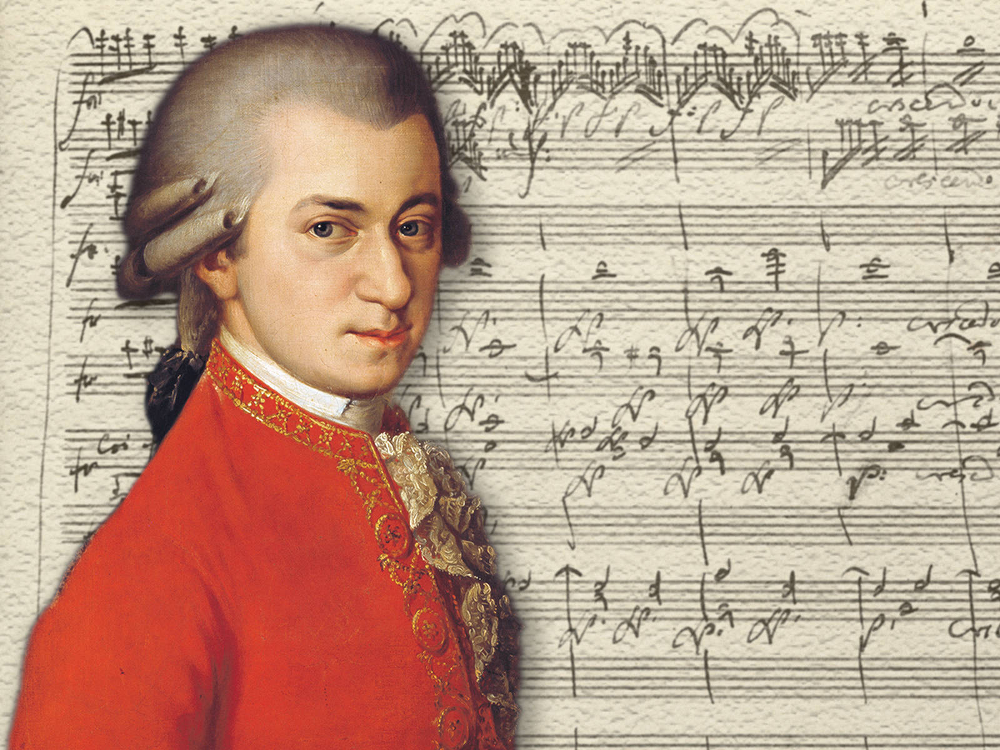

Mozart was born on 27 January 1756. This is the year of Mozart's birth, providing a crucial piece of biographical information and placing him within the historical context of the 18th century.

This aligns with historical records and dismisses fictional locations, emphasizing the significance of Getreidegasse 9, Salzburg as Mozart's birthplace.
At the age of 17, Mozart gained recognition as a performer in Salzburg. This early acknowledgment highlights his prodigious musical talent, suggesting that he was already making a significant impact in the musical scene during his teenage years.
